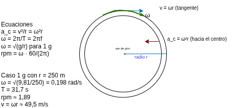
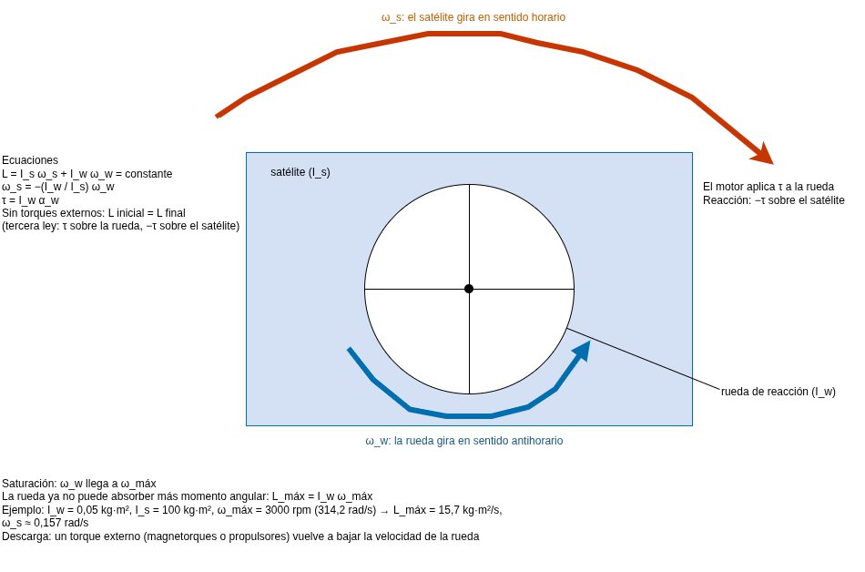

Física mecánica en el software real
Portafolio de evidencias de Sebastian Cascante Badilla · Universidad CENFOTEC · Docente: Andrés Castro Núñez. Cada tema parte de un caso concreto de ingeniería de software y lo conecta con la ecuación que lo gobierna.
Tema 1 — Rastreo y navegación de un dron de reparto
Caso de uso en ingeniería del software
El controlador de vuelo de código abierto PX4, usado en drones comerciales, genera su trayectoria de misión como consignas de posición, velocidad y aceleración en cada instante; el controlador de velocidad convierte esa aceleración en empuje y actitud del dron. El software representa la ruta con las ecuaciones de la cinemática:
Modelar la trayectoria así, en lugar de guardar una lista fija de puntos, permite obtener velocidad y aceleración exactas en cualquier instante. Eso garantiza que el dron nunca reciba una orden de aceleración mayor que la que sus motores pueden dar y que el rastreo del paquete sea suave y predecible. Una ruta precalculada punto a punto no ofrece esa garantía. El costo es que hay que parametrizar la ruta y verificar sus límites físicos.
Ruta declarada y datos
Datos generados por mí a partir de esta ruta declarada, para t entre 0 y 30 s: x(t) = 2t + 0,1t² (m) y y(t) = 15·sen(0,25t) (m). Derivando: vx = 2 + 0,2t, vy = 3,75·cos(0,25t), ax = 0,2 y ay = −0,9375·sen(0,25t), todas en unidades SI.
Fuente de datos: calculados por el autor con las ecuaciones de la ruta declarada. Referencia del caso: PX4 Dev Team, «Controller Diagrams», PX4 Guide, https://docs.px4.io/main/en/flight_stack/controller_diagrams.html.
Tema 2 — El salto del personaje: cómo los motores de juego falsean la gravedad
Caso de uso en ingeniería del software
Los juegos de plataformas, como la saga Super Mario Bros, y motores como Unity y Godot calculan el salto con las ecuaciones del movimiento con aceleración constante. En vez de fijar 9,81 m/s², los diseñadores parten de valores amigables como la altura y la distancia del salto, y de ahí obtienen los parámetros físicos (enfoque expuesto por Kyle Pittman en la GDC 2016). Con la altura h y el tiempo hasta el punto más alto ta las ecuaciones quedan así:
Con la gravedad real, un salto de 2 m en escala humana dura unos 1,3 s en el aire, lo que se sentiría lento y flotante. Al modelar la física con parámetros ajustables, el equipo cambia la sensación de control con dos números, sin animar cada salto a mano. La alternativa de una animación guionizada no reacciona a obstáculos ni a saltos de distinta fuerza. Lo que se sacrifica es el realismo.
Simulación
Mueve los controles: la trayectoria se recalcula con las ecuaciones de arriba. La velocidad horizontal es fija, de 5 m/s.
Referencia: Pittman, K. (Minor Key Games), «Math for Game Programmers: Building a Better Jump», GDC 2016, https://gdcvault.com/play/1023148/Math-for-Game-Programmers-Building. Ecuaciones: Serway & Jewett, Física para ciencias e ingeniería, cap. de movimiento en dos dimensiones.
Tema 3 — Gravedad artificial por rotación en hábitats espaciales
Caso de uso en ingeniería del software
El estudio de diseño de asentamientos espaciales de la NASA (Stanford Torus, 1975-77) propuso un anillo de entre 1,6 y 1,8 km de diámetro según la fuente consultada, que gira una vez por minuto (1 rpm) para dar gravedad terrestre en el borde exterior. Las herramientas de simulación y diseño de ese tipo de hábitats resuelven el mismo cálculo: dada una gravedad aparente objetivo, obtienen el radio y la velocidad de giro compatibles.
Modelar la física permite probar cualquier radio o giro y ver de inmediato si la gravedad aparente y el mareo por velocidad angular alta son aceptables. Una tabla fija de configuraciones solo cubriría los casos precalculados. Lo que cuesta es incluir efectos adicionales, como la fuerza de Coriolis, para validar el diseño.
Esquema

Caso numérico: ¿qué radio y qué rpm dan 1 g?
Elijo r = 250 m y exijo ac = g = 9,81 m/s².
T = 2π/ω = 31,7 s · f = 0,0315 Hz
rpm = 0,198 · 60/(2π) ≈ 1,89 rpm · v = ωr ≈ 49,5 m/s
Con un radio mayor, por ejemplo 900 m, de un orden similar al del Stanford Torus, ω = √(9,81/900) = 0,104 rad/s ≈ 1,0 rpm. A mayor radio se necesita menos giro para el mismo 1 g, que es la razón de que los diseños grandes sean más cómodos.
Fuente: Johnson, R. & Holbrow, C. (eds.), Space Settlements: A Design Study, NASA SP-413, 1977. Esquema elaborado por el autor.
Tema 4 — Llantas de Fórmula 1: la ventana de temperatura y el agarre
Caso de uso en ingeniería del software
Los simuladores de carreras, como la serie F1 de EA Sports/Codemasters, y las herramientas de simulación de vuelta de los equipos modelan la llanta con su temperatura y su carga. El modelo básico de fricción es:
La fricción estática cumple Fs ≤ μsN y la cinética Fk = μkN, donde N es la fuerza normal. Para una llanta que no desliza, el límite relevante es el estático:
Con un μ fijo, la fuerza lateral máxima crecería linealmente con la carga vertical Fz. La goma real tiene sensibilidad a la carga: μ baja cuando Fz sube, y además solo rinde bien dentro de una ventana de temperatura. Modelar μ(T, Fz) es lo que hace que el software reproduzca por qué una llanta fría o sobrecalentada pierde agarre, algo que un coeficiente constante no puede mostrar. El costo es tener que calibrar el modelo con datos reales de cada compuesto.
Fuerza lateral máxima contra carga vertical
Gráfica calculada con parámetros ilustrativos declarados: modelo simple F = μ₀Fz con μ₀ = 2,0, y modelo con sensibilidad a la carga F = Fz(μ₀ − kFz) con k = 6×10⁻⁵ N⁻¹.
Fuente: el efecto de sensibilidad a la carga (μ baja al aumentar Fz) se trata en Pacejka, H. B., Tire and Vehicle Dynamics, 3.ª ed., Butterworth-Heinemann, 2012. La forma cuadrática de la gráfica es una simplificación del autor. Los valores μ₀ y k son ilustrativos y fueron elegidos por el autor, no son datos de un compuesto Pirelli real.
Tema 5 — El resorte virtual detrás de un control háptico
Caso de uso en ingeniería del software
Los gatillos adaptativos del control DualSense de PlayStation 5 usan un motor que empuja contra el dedo. El software del juego define una curva de fuerza contra recorrido y el firmware la reproduce como si el gatillo tuviera un resorte:
Programar una ley de fuerza permite simular un arco que se tensa, un freno que se endurece o una arma que se atasca, y cambiar la dureza por código. Un sonido o una vibración pregrabados no responden a cuánto presiona el jugador. Lo que se sacrifica es la simplicidad: el motor solo imita la fuerza, y el juego debe actualizarla a tiempo.
Curva de fuerza contra desplazamiento
Curva ilustrativa con k = 0,8 N/mm y fuerza máxima de 6 N, que ocurre al llegar a la pared virtual.
Video
Análisis del video
El video explica cómo funcionan los gatillos adaptativos del control DualSense. Entre los minutos 3:24 y 3:39, el entrevistado de Sony describe que se trata de motores que empujan de vuelta contra el gatillo, y que la forma en que empujan la controla el juego. Esa es la fuerza restauradora: el control no tiene ningún resorte real, el motor la produce por software.
El momento concreto donde se percibe esa fuerza es el del arco, entre 4:18 y 4:34. Como el gatillo tiene un recorrido largo, el equipo lo dividió en varios niveles, de modo que cada vez que el jugador lo aprieta un poco más, la resistencia es mayor. Según el video, la tensión se siente cada vez más fuerte a lo largo del recorrido, igual que al tensar un arco real.
Ese comportamiento corresponde a la ley de Hooke, F = −kx: la fuerza restauradora crece en proporción al desplazamiento x del gatillo. En la curva de esta página, con una constante ilustrativa de k = 0,8 N/mm, a x = 5 mm la fuerza es F = 0,8 × 5 = 4 N, y llega a su tope de 6 N a los 7,5 mm. Esos valores son un ejemplo mío y no datos de Sony; lo que sí confirma el video es la forma de la curva, que sube a medida que el jugador aprieta. La diferencia es que el video habla de niveles, así que la fuerza real sube por escalones y la línea recta es la versión idealizada de esos escalones.
Por la tercera ley de Newton, el dedo empuja el gatillo y el gatillo empuja el dedo con una fuerza de igual magnitud y sentido contrario. Esa reacción, producida por el motor, es lo que el jugador siente como "tensión", aunque no haya nada que tensar. Por eso el recurso es una simulación: el software define la curva de fuerza contra desplazamiento y el motor la reproduce.
Referencias: Sony Interactive Entertainment, documentación del control DualSense. Video: PlayStation Access (canal de YouTube) A Game Developer Explains How PS5's DualSense Actually Works, YouTube. Agosto, 2021, https://www.youtube.com/watch?v=CaPHUZapCTI. Curva elaborada por el autor.
Tema 6 — Frenado regenerativo en un vehículo eléctrico
Caso de uso en ingeniería del software
El sistema de mezcla de frenado (brake blending) de los vehículos eléctricos decide en cada instante cuánta desaceleración la hace el motor como generador y cuánta los frenos de fricción. Su cálculo parte del teorema trabajo–energía:
Un valor fijo de frenado, igual para toda situación, no sabe cuánta energía puede aceptar la batería ni cuánta potencia entrega el motor a cada velocidad. Modelar la energía permite repartir el frenado entre generador y fricción y medir cuánto se recupera. Lo que cuesta es que η no es constante: cambia con la velocidad, la temperatura y el estado de carga de la batería.
Balance de energía en un ciclo
Datos calculados por mí con un ciclo declarado: 0 a 50 km/h en 10 s, 20 s a velocidad constante, frenado uniforme a 0 en 10 s y 10 s detenido, repetido dos veces. Parámetros: m = 1800 kg y η = 0,7 (valor ilustrativo, sin resistencia del aire ni rodadura). En cada frenado Ek = 173,6 kJ (0,048 kWh): se recuperan 121,5 kJ y se disipan 52,1 kJ.
Fuente de datos: calculados por el autor con las ecuaciones de arriba. Contexto real: según el Departamento de Energía de EE. UU., el frenado regenerativo neto recupera cerca de 22 % de la energía en el ciclo combinado ciudad/carretera de la EPA (DOE, Vehicle Technologies Office, «Fact of the Week #1360», 16-sep-2024; y fueleconomy.gov, «Where the Energy Goes: Electric Cars»).
Tema 7 — El coeficiente de restitución en un motor de videojuego: por qué la pelota rebota mal
Caso de uso en ingeniería del software
Box2D, Unity (la propiedad Bounciness del Physic Material) y Godot (bounce) incluyen el coeficiente de restitución e como parámetro de cada material. El motor resuelve cada choque con la conservación del momento y con e:
Con una altura de rebote guionizada, la pelota no reaccionaría a otra masa, otra velocidad o otro material. Con e, cualquier choque produce un resultado coherente. El costo: con e cercano a 1 los errores numéricos pueden hacer que la pelota rebote para siempre o gane energía, por eso los motores añaden umbrales de velocidad para detenerla.
Simulación
La pelota de la derecha es una referencia ilustrativa con e = 0,75. Ecuaciones: Serway & Jewett, Física para ciencias e ingeniería, cap. de momento lineal y colisiones.
Tema 8 — Ruedas de reacción: cómo un satélite se gira sin empujarse contra nada
Caso de uso en ingeniería del software
El software de control de actitud de satélites y telescopios como el Hubble manda torques a ruedas de reacción para apuntar sin gastar combustible. Sin torques externos, el momento angular total se conserva:
Un controlador basado en esta física apunta con precisión fina y sin propelente, que es finito; una secuencia fija de encendidos de propulsores gastaría combustible en cada giro. Lo que cuesta es la saturación: la misión Kepler perdió dos ruedas de reacción y no pudo seguir apuntando como antes.
Esquema

Qué pasa cuando la rueda llega a su velocidad máxima
Lmáx = Iwωmáx = 15,7 kg·m²/s → ωs = 15,7/100 = 0,157 rad/s ≈ 9,0 °/s
Con αw = 10 rad/s²: τ = 0,5 N·m, y la rueda se satura a los 31,4 s, con el satélite ya girado unos 141°
Al saturarse, la rueda ya no puede absorber más momento angular y el control pierde esa capacidad. Se «descarga» con un torque externo (magnetorques contra el campo terrestre o propulsores) que vuelve a bajar su velocidad.
Tema 9 — Asistencia gravitatoria: cómo la Voyager ganó velocidad sin gastar combustible
Caso de uso en ingeniería del software
El diseño de trayectorias de la Voyager 2 (JPL/NASA) y las herramientas actuales, como GMAT de la NASA, modelan la gravedad de los planetas para elegir fecha y distancia de cada sobrevuelo. En el marco del planeta la rapidez de entrada y de salida es la misma; en el marco del Sol se suma la velocidad del planeta:
Una tabla fija de maniobras no permitiría buscar la combinación de fechas y distancias que une los cuatro planetas. Al modelar la gravitación el software calcula cuánto cambia la rapidez en cada encuentro sin propelente. Lo que cuesta es la precisión: un error pequeño de llegada cambia por completo la trayectoria siguiente.
Rapidez respecto al Sol
| Encuentro | Fecha | Rapidez antes → después (datos JPL) | Cambio según American Scientist |
|---|---|---|---|
| Júpiter | 9-jul-1979 | 10,0 → 22,8 km/s (+12,8) | ≈ +10 km/s |
| Saturno | 25-ago-1981 | 15,9 → 20,9 km/s (+5,1) | ≈ +4 km/s |
| Urano | 24-ene-1986 | 17,9 → 19,8 km/s (+1,9) | ≈ +2 km/s |
| Neptuno | 25-ago-1989 | 18,9 → 16,8 km/s (−2,1) | ≈ −3 km/s |
La gráfica muestra cómo la rapidez baja mientras la sonda se aleja del Sol (por la conservación de ½v² − GM/r) y sube en saltos bruscos en cada encuentro. Las diferencias de la tabla vienen de que los datos de JPL están muestreados cada 10 días y de que su trayectoria hasta 1989 es una de diseño de misión, aproximada. Desde 1989 la trayectoria usa un ajuste de 2022 con datos de seguimiento reales.
Cambios de rapidez: American Scientist, «The Voyagers' Odyssey» (americanscientist.org/node/3686). Datos de la gráfica: JPL Horizons System (NASA/JPL), vectores de estado de la Voyager 2 (−32) respecto al centro del Sol, marco eclíptico J2000, del 1-sep-1977 al 30-oct-2026 con paso de 10 días; trayectoria de diseño aproximada hasta 1989 y ajuste de 2022 (R. Jacobson) desde entonces; rapidez = √(vx² + vy² + vz²).
Temas de la entrega final
Entrega final: spring animations en interfaces · síntesis de sonido y armónicos · resonancia estructural y Tacoma Narrows · enfriamiento líquido de un centro de datos.